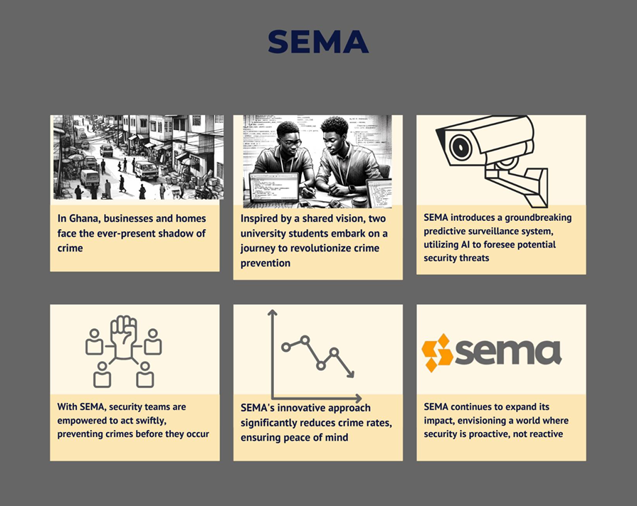

Predictive Surveillance and AI: A New Era of Security
In my final year at the University of Ghana, a chilling video made its rounds on social media: a young man, likely under the influence of drugs, subjecting a two-year-old child to unimaginable torture. The video spread like wildfire, and the Ghana Police service offered a reward for information leading to the man's capture. This marked a crucial turning point in my life, propelling me towards studying how AI can help here and help prevent crime in general.
Transforming Surveillance: From Reactive to Proactive
My project partner and I committed ourselves to a final year project that would later turn into a startup called SEMA. We decided we were going to develop a software that would interface with surveillance cameras to offer the cameras intelligent functionalities. When it became clear that this would become a startup, we gave ourselves the mission to transform the way surveillance is carried out, moving from a reactive stance to a proactive one. Why wait for a crime to occur and then respond? Why not prevent the crime from happening in the first place?
Our research was focussed on an AI-powered surveillance technology aiming to predict and preempt crime. Our work caught the attention of Ghana Digital Centers Limited, who saw the potential in our vision and offered us the opportunity to continue this work at the Digital Centre over the course of our national service period
SEMA connects with existing surveillance setups, augmenting them with predictive capabilities. Our objective is to detect suspicious activities in real-time and send immediate alerts to security personnel. This enables them to intervene and potentially prevent a crime from happening.
The Road Ahead
While our system is currently being fine-tuned, it is a major step towards proactive crime control. Unlike traditional systems that merely react to crimes, predictive surveillance has the potential to prevent crimes from occurring in the first place. This is a revolution, and it's one that we're at the forefront of.
Forging a Safer Future: The Path Ahead
Our work to this point has been incredibly fulfilling, yet we understand that the journey has just begun. In the pursuit of transforming security through AI and predictive surveillance, we recognize the mountains yet to climb. We need more than the commitment of our team; we need a community that believes in a safer future, investors who see the transformative potential of our technology, and partners willing to join us on this groundbreaking journey.
To turn this vision into a reality, we need your support. Together, we can redefine security, revolutionize surveillance, and contribute to creating a safer Ghana and a safer Africa. With shared commitment and collective effort, we can ensure a safer tomorrow for everyone.